Week 05: 3D Design & Printing
This week, we're designing and 3D printing an object that can't easily be created using subtractive methods (e.g. laser cutting, CNC).
We're also scanning an object using photogrammatry.
First, we'll try scanning my Teenage Engineering OP-1 hipster instrument using PolyCam's photogrammatry functionality via iPhone.
Here's the device in real life, on a table where it will be photogrammatrized:

The first attempt is a little rough, and doesn't model the OP-1's underside, but there's a good amount of detail:
For the second attempt I focused more on getting all sides of the device. The result is more complete, but also has more significant issues in the areas with detail, particularly on the underside:
Out of curiosity we'll try a LIDAR-based scan to see how the result compares to photogrammatry:
As we can see, it produces an overall inferior model, not at all usable with its melted consistency,
though it doesn't have as many issues determining the position of objects in space and keeping them discete. We'll stick with photogrammatry for detailed model work.
Now, let's move on to designing a 3D model in Fusion 360 and making our first 3D print. Exciting!
We want to design something that is not easily possible through subtractive fabrication methods, so one of the first thing that comes to mind is an enclosed ball joint.
We'll reference this tutorial as a starting point:
https://www.instructables.com/Ball-Joint-With-Fusion-360/
Starting by creating a 10mm sphere intersecting with a cylinder of 5mm diameter an 15mm depth.
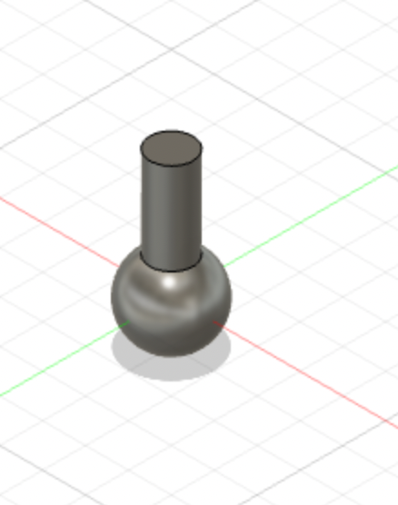
Next, we'll hollow out the sphere and cut off one side of it using the Split Body tool.
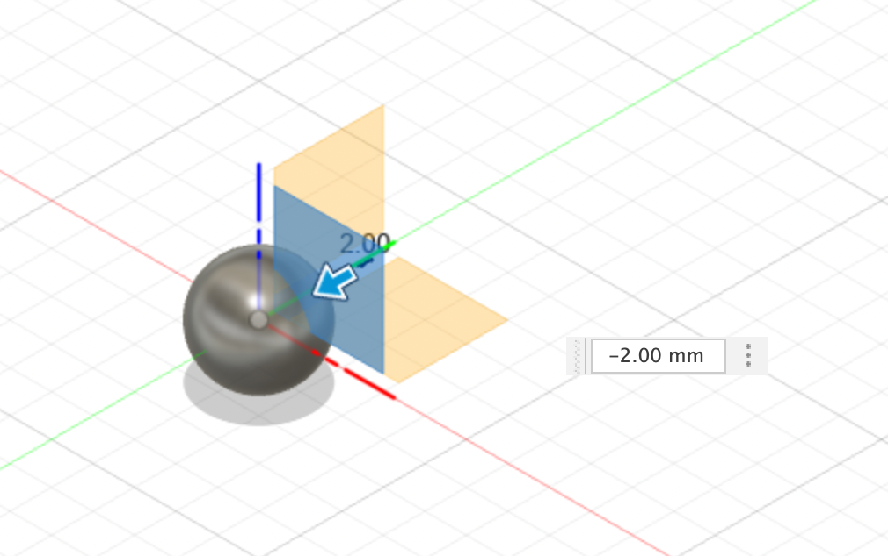
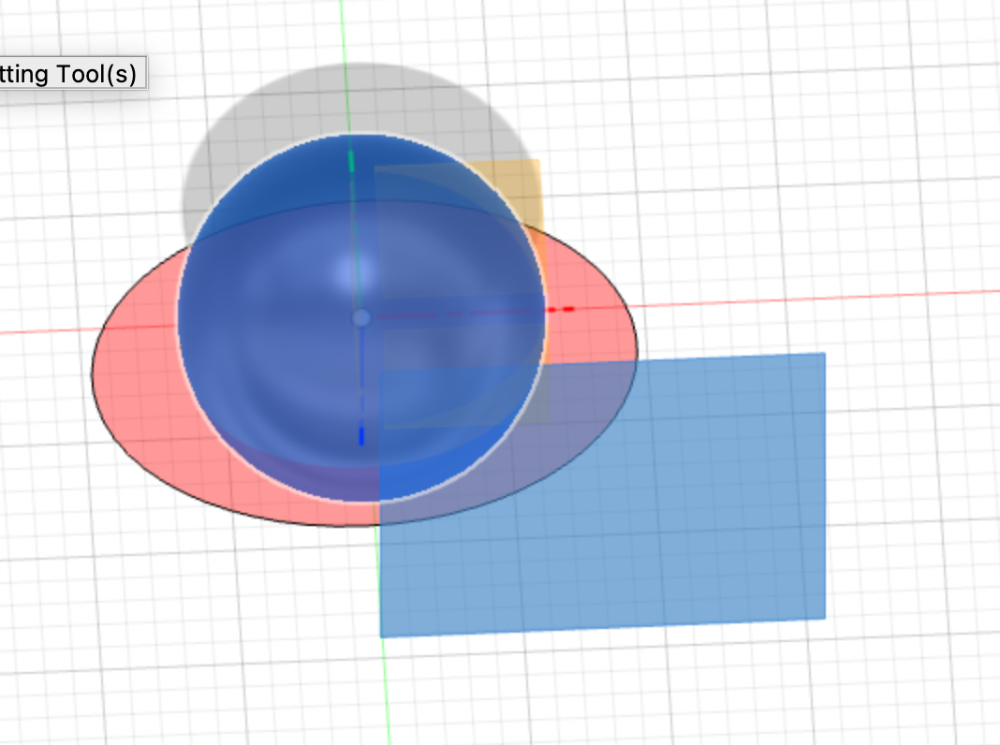
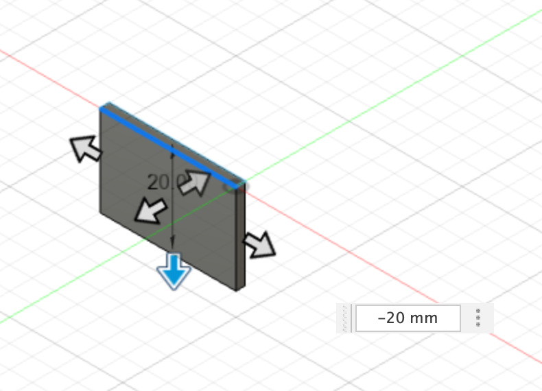
Cutting out slits in the semisphere as portholes to see what's going on internally.
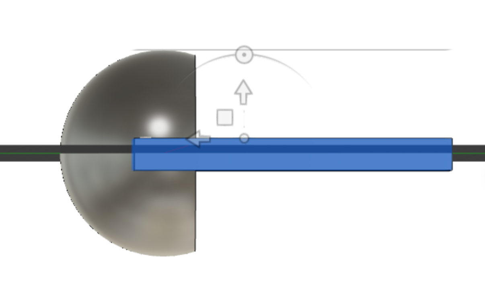
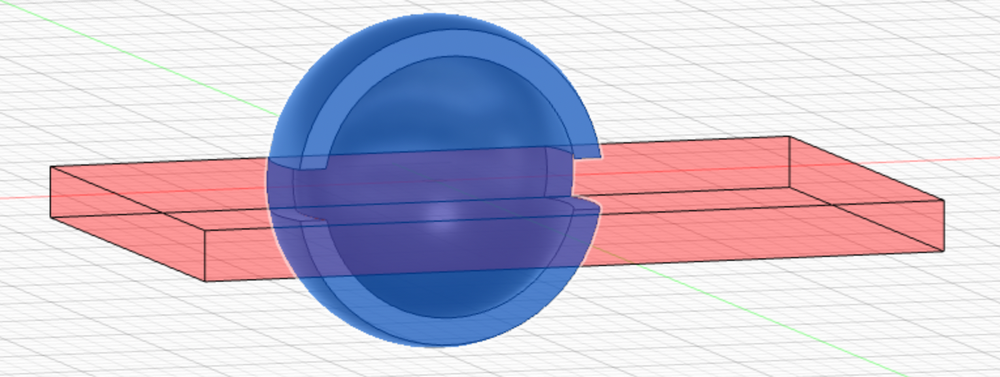
Rotate the block 90 degrees to make two more symmetrical cuts.
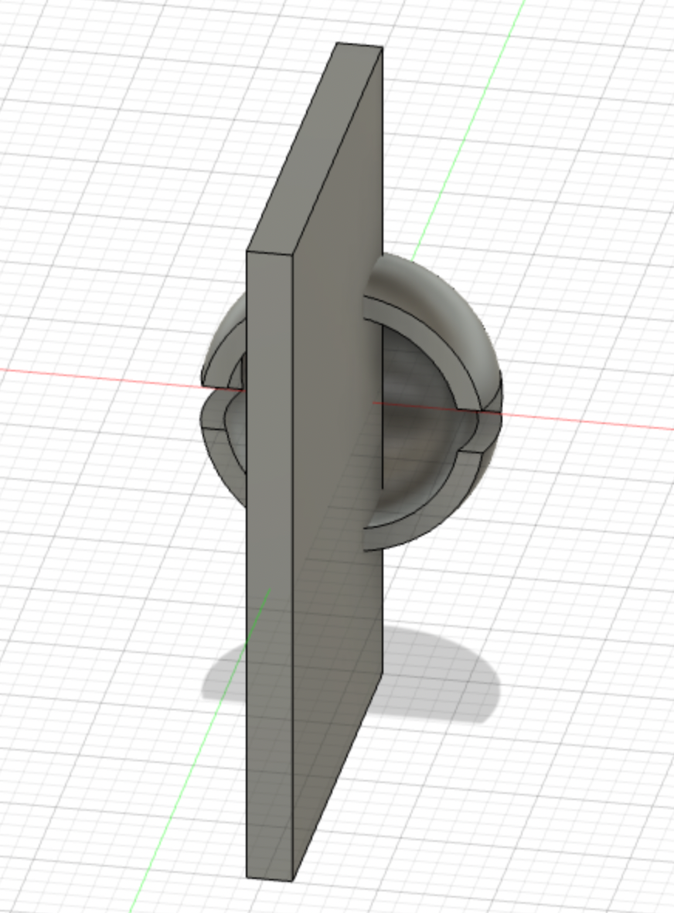
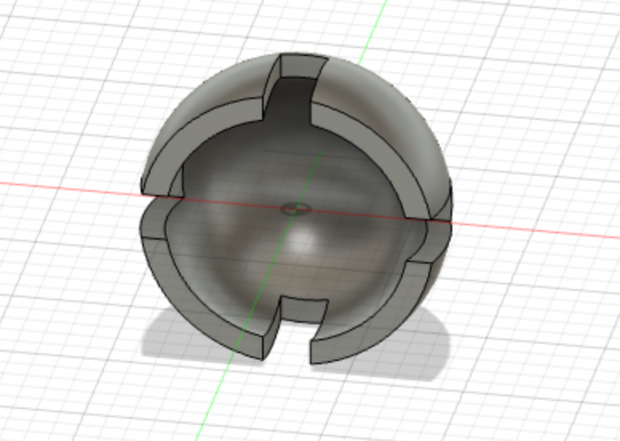
Attach the cylinder as before, and it's coming together.
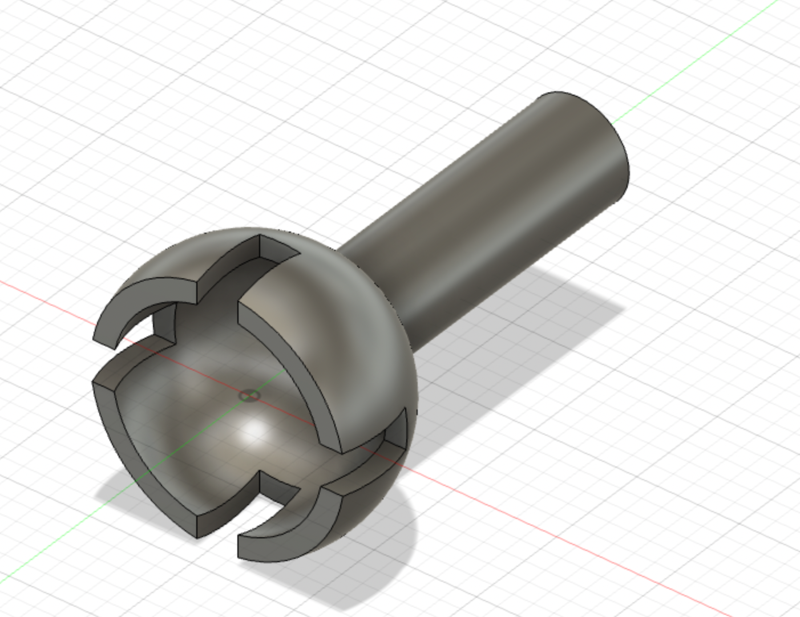
Now we'll position the fully spherical internal joint correctly within the outer shell using the move tool.
However, the current form is not really ready to be called an additive-only fabrication solution, since it looks like the ball joint would be able to pop out.
So let's modify the outer shell by extending it further.
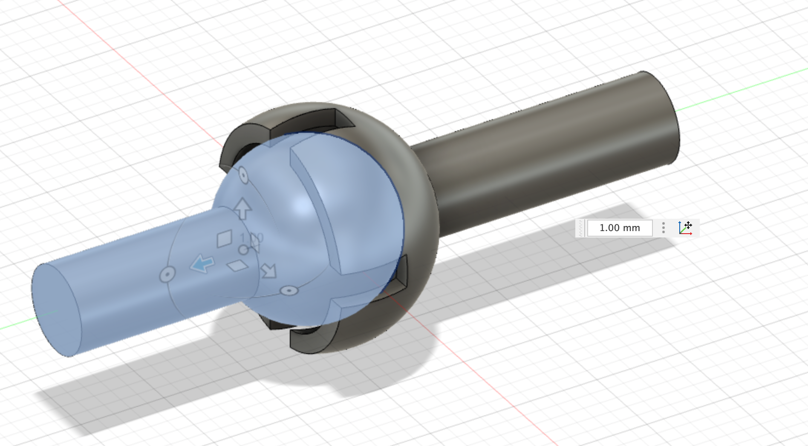
Using the extrude function on the four segments of the semi-sphere, we can extend it so that the ball joint is permanently enclosed.
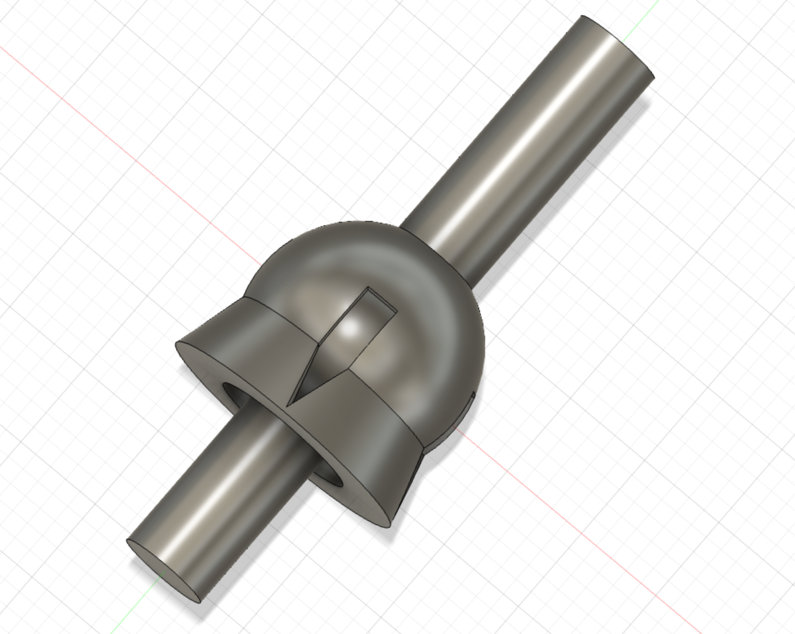
And we're done with the design process. Export to to STL with these settings:
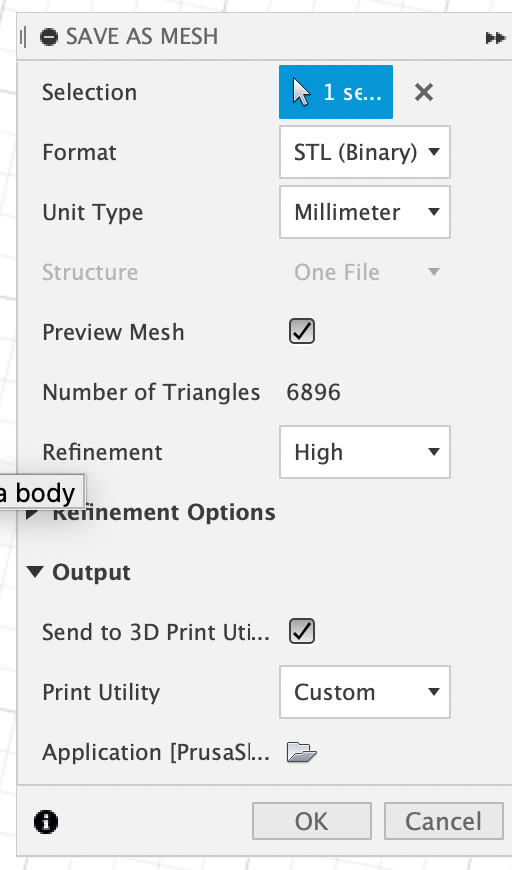
Next, we'll move on to slicing it in PrusaSlicer. This will be fairly straightforward, beginning with these basic print settings:
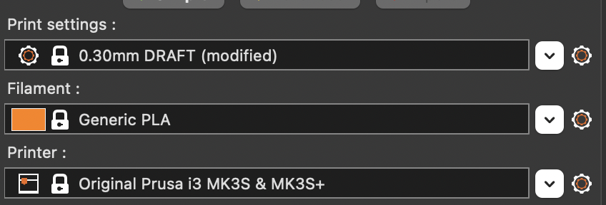
Our important decision rests with how to handle the supports. We could implement supports on the build plate only, per the below:
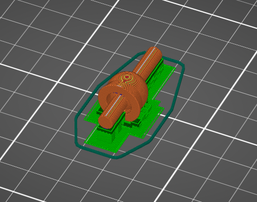
However, that won't include any support for the free-floating ball joint itself, which will surely fail to produce what we're looking for.
So we'll set support to Everywhere and see if we can safely remove the support material from the joint area after the print.
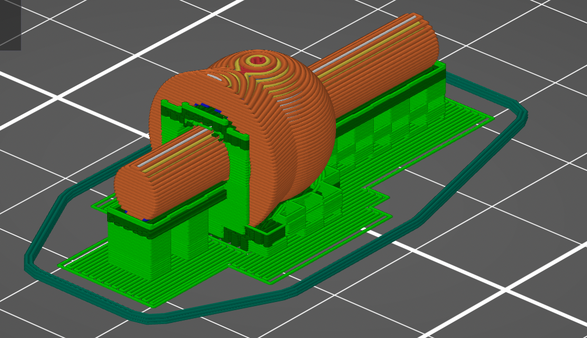
3D printer goes brrrr.

And, finally, voila.